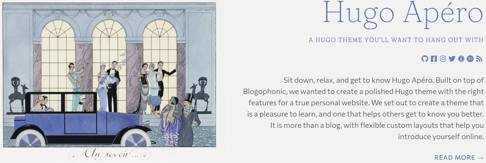

Building a dedicated publications section in hugo-apéro
By Jack Gregory in Web Development
July 21, 2026

TL;DR
In this blog, I summarize the steps necessary to add a dedicated publication content type to a
Hugo-Apéro website — including a custom byline field for the publishing venue, a choice between one- and two-column layouts, and a sidebar link for citing the work.
Introduction
Our publications section had been repurposed from an older Academic/Wowchemy-style front matter (format: hugo, featured, publishDate, slug), which meant it inherited Hugo-Apéro’s generic _default templates by default — the same ones used by blog posts, talks, and every other section. That inheritance is convenient until you want a publication to behave differently: showing a journal name instead of category tags, for instance, or offering a “cite this publication” link that a blog post has no use for.
In this blog, I’ll outline the four steps necessary to add a dedicated publications section to your own Hugo-Apéro website:
- Give publications their own layout folder;
- Add a publication field;
- Offer a single and a sidebar layout; and,
- Add a “cite this publication” sidebar link.
Why Scope by Section
Hugo resolves templates by content type before falling back to _default. Thus, a page under content/publication/ will use layouts/publication/single.html if it exists, and only falls back to layouts/_default/single.html otherwise. That lookup order is what makes section-specific customisation safe — editing _default/single.html directly would change how blog posts and talks render too, since they share that same fallback template.
From this point on, every change respective lives only in the publication folder, and the rest of the site stays untouched.
Publication Field
The original byline rendered author and categories on one line:
{{ if .Params.show_author_byline }}<p class="f6 measure lh-copy mv1">{{ if .Params.author }}By {{ .Params.author }}{{ end }}{{ with .Params.categories }} in{{ range . }} <a href="{{ "categories/" | absURL }}{{ . | urlize }}">{{ . }}</a> {{ end }}{{ end }}</p>{{ end }}
For a publication, the more natural pairing is author and journal, e.g. “By Author(s)” on one line, “In Journal Name” on the next.
...
{{ if .Params.show_author_byline }}<p class="f6 measure lh-copy {{ if .Params.publication }}mv0{{ else }}mv1{{ end }}">{{ if .Params.author }}By {{ .Params.author }}{{ end }}</p>{{ end }}
{{ if .Params.publication }}<p class="f6 measure lh-copy mt0 mb1">In <em>{{ .Params.publication }}</em></p>{{ end }}
{{ if .Params.show_post_date }}<p class="f7 db mv0 ttu">{{ .PublishDate.Format "January 2, 2006" }}</p>{{ end }}
{{ if .Params.categories }}<p class="f6 measure lh-copy mv1">{{ with .Params.categories }}{{ range . }} <a href="{{ "categories/" | absURL }}{{ . | urlize }}">{{ . }}</a> {{ end }}{{ end }}</p>{{ end }}
...
The author line only drops its bottom margin (mv0) when a publication value is present; otherwise it keeps its normal spacing (mv1) so standalone author lines still look right. The publication line’s own top margin is zeroed (mt0) so it sits flush under the author line, with a small bottom margin (mb1) preserved before the date or categories row that follows. The <em> wrapping italicises only the venue name, leaving “In " upright — matching how citations conventionally style the venue rather than the whole phrase. Categories were kept as an optional row beneath.
In front matter, this just needs one field:
publication: "<JOURNAL>"
Layouts
Some publications benefit from a two-column layout with a table of contents alongside long-form content; others read fine as a single column. Hugo-Apéro already supports this pattern for blog posts via a layout: front-matter field, so I mirrored it for publications: two templates in layouts/publication/, with front matter choosing between them.
Single
This is the one-column layout, and the default when no layout field is set.
- New folder & file: Copy
layouts/_default/single.htmltolayouts/publication/single.html. - Byline block: In the new file, replace the single author/categories line with:
- the author line;
- a new publication line; and,
- an optional categories line underneath.
mkdir -p layouts/publication
cp layouts/_default/single.html layouts/publication/single.html
{{ define "main" }}
<main class="page-main pa4" role="main">
<section class="page-content mw7 center">
<article class="post-content pa0 ph4-l">
<header class="post-header">
<h1 class="f1 lh-solid measure-narrow mb3 fw4">{{ .Title }}</h1>
{{ if .Params.subtitle }}<h4 class="f4 mt0 mb4 lh-title measure">{{ .Params.subtitle }}</h4>{{ end }}
{{ if .Params.show_author_byline }}<p class="f6 measure lh-copy {{ if .Params.publication }}mv0{{ else }}mv1{{ end }}">{{ if .Params.author }}By {{ .Params.author }}{{ end }}</p>{{ end }}
{{ if .Params.publication }}<p class="f6 measure lh-copy mt0 mb1">In <em>{{ .Params.publication }}</em></p>{{ end }}
{{ if .Params.show_post_date }}<p class="f7 db mv0 ttu">{{ .PublishDate.Format "January 2, 2006" }}</p>{{ end }}
{{ if .Params.categories }}<p class="f6 measure lh-copy mv1">{{ with .Params.categories }}{{ range . }} <a href="{{ "categories/" | absURL }}{{ . | urlize }}">{{ . }}</a> {{ end }}{{ end }}</p>{{ end }}
{{ if .Params.links }}
<div class="ph0 pt5">
{{ partial "shared/btn-links.html" . }}
</div>
{{ end }}
</header>
{{ $headers := findRE "<h[2-6].*>" .Content }}
{{ $has_headers := ge (len $headers) 1 }}
{{ if and $has_headers .Params.toc }}
{{ $tocDepth := .Params.toc_depth | default 2 }}
<details open id="PageTableOfContents" class="mv4">
<summary><h2 class="mt5 f5 fw7 ttu tracked dib">{{ .Params.sidebar.text_contents_label | default "On this page" }}</h2></summary>
<div class="pl2 pr0 mh0">
<nav data-toc-depth="{{ $tocDepth }}">
{{ .TableOfContents }}
</nav>
</div>
</details>
{{ end }}
<section class="post-body pt5 pb4">
{{ .Content }}
{{ .Scratch.Set "details" "closed" }}
{{ partial "shared/post-details.html" . }}
</section>
<footer class="post-footer">
{{ partial "shared/post-pagination.html" . }}
</footer>
</article>
{{ if .Params.show_comments }}
{{ partial "shared/comments.html" . }}
{{ end }}
</section>
</main>
{{ end }}
Single sidebar
This is the two-column layout, selected by setting layout: "single-sidebar" in front matter.
- New file: Copy
layouts/blog/single-sidebar.htmltolayouts/publication/single-sidebar.html. - Byline block: In the new file, replace the single author/categories line with:
- the author line;
- a new publication line; and,
- an optional categories line underneath.
- Update scaffold call: Change the sidebar partial call to
shared/sidebar-scaffold-publication.html(covered in the next section). - Margins: Add top margin above the ToC block (i.e.,
mt5).
cp layouts/blog/single-sidebar.html layouts/publication/single-sidebar.html
{{ define "main" }}
<main class="page-main pa4" role="main">
<section class="page-content mw7 center">
<article class="post-content pa0 pr3-l">
<header class="post-header">
<h1 class="f1 lh-solid measure-narrow mb3 fw4">{{ .Title }}</h1>
{{ if .Params.subtitle }}<h4 class="f4 mt0 mb4 lh-title measure">{{ .Params.subtitle }}</h4>{{ end }}
{{ if .Params.show_author_byline }}<p class="f6 measure lh-copy {{ if .Params.publication }}mv0{{ else }}mv1{{ end }}">{{ if .Params.author }}By {{ .Params.author }}{{ end }}</p>{{ end }}
{{ if .Params.publication }}<p class="f6 measure lh-copy mt0 mb1">In <em>{{ .Params.publication }}</em></p>{{ end }}
{{ if .Params.show_post_date }}<p class="f7 db mv0 ttu">{{ .PublishDate.Format "January 2, 2006" }}</p>{{ end }}
{{ if .Params.categories }}<p class="f6 measure lh-copy mv1">{{ with .Params.categories }}{{ range . }} <a href="{{ "categories/" | absURL }}{{ . | urlize }}">{{ . }}</a> {{ end }}{{ end }}</p>{{ end }}
{{ if .Params.links }}
<div class="ph0 pt5">
{{ partial "shared/btn-links.html" . }}
</div>
{{ end }}
</header>
<section class="post-body pt5 pb4">
{{ .Content }}
</section>
<footer class="post-footer">
{{ partial "shared/post-pagination.html" . }}
</footer>
</article>
{{ if .Params.show_comments }}
{{ partial "shared/comments.html" . }}
{{ end }}
</section>
</main>
<aside class="page-sidebar" role="complementary">
{{ partial "shared/sidebar-scaffold-publication.html" . }}
{{ $headers := findRE "<h[2-6].*>" .Content }}
{{ $has_headers := ge (len $headers) 1 }}
{{ if and $has_headers .Params.toc }}
{{ $tocDepth := .Params.toc_depth | default 2 }}
<div class="ph4 pb4 mt5">
<h2 class="mv3 f5 fw7 ttu tracked">{{ .Params.sidebar.text_contents_label | default "On this page" }}</h2>
<nav id="PageTableOfContents" aria-label="PageTableOfContents" data-toc-depth="{{ $tocDepth }}">
{{ .TableOfContents }}
</nav>
</div>
{{ end }}
{{ .Scratch.Set "details" "open" }}
{{ partial "shared/post-details.html" . }}
</aside>
{{ end }}
Pages without a layout field fall through to single.html automatically, so only publications that need the two-column treatment need to set anything. The mt5 added to the ToC wrapper (Tachyons’ largest standard top-margin step) puts more breathing room between the new cite link below and the “On this page” heading.
Citation Link
The sidebar content comes from a shared partial, layouts/partials/shared/sidebar-scaffold.html, used by every section. Rather than add publication-only markup there, I duplicated it and referenced the duplicate from single-sidebar.html above, so blog and talks keep the original untouched.
- New partial: Copy
layouts/partials/shared/sidebar-scaffold.htmltolayouts/partials/shared/sidebar-scaffold-publication.html. - Cite link: Add the
cite_link_urlblock below the existing sidebar link.
cp layouts/partials/shared/sidebar-scaffold.html layouts/partials/shared/sidebar-scaffold-publication.html
{{ $page := . }} <!--save current page-->
{{ $section := $page.CurrentSection }} <!--save current section-->
{{ $is_root := eq .CurrentSection .FirstSection }}
{{ partial "shared/sidebar/sidebar-image.html" $page }}
<div class="blog-info ph4 pt4 pb4 pb0-l">
{{ partial "shared/sidebar/sidebar-header.html" $section }}
{{ partial "shared/sidebar/sidebar-link.html" .Params.sidebar }}
{{ with .Params.cite_link_url }}
{{ partial "shared/sidebar/sidebar-link.html" (dict "text_link_label" "Cite this publication" "text_link_url" .) }}
{{ end }}
</div>
{{ partial "shared/sidebar/sidebar-adunit.html" .Params.sidebar }}
The new link reuses the existing sidebar-link.html partial — passing it a small dict with the label and URL — rather than duplicating its markup, and the {{ with .Params.cite_link_url }} guard means it simply doesn’t render on publications that leave the field unset. In front matter:
cite_link_url: "<URL>"
Usage
With the layouts and partials in place, each publication needs only its own front matter, no other configuration:
author: "<AUTHOR(S)>"
publication: "<JOURNAL>"
layout: single-sidebar # omit for the one-column layout
toc: true
cite_link_url: "<URL>"
Leaving publication, layout, or cite_link_url unset simply skips that piece of output — a publication with none of them set behaves exactly like a plain post.
References
I found the following references helpful in building out this publications section as well as preparing this blog:
-
Hugo’s template lookup order documentation, for how section-specific templates take priority over
_default. -
Hugo’s
dictfunction documentation, used to pass ad hoc parameters into the reusedsidebar-link.htmlpartial. - The
Hugo-Apéro theme docs, for the
layout:front-matter convention this section’s single/single-sidebar toggle was modelled on.